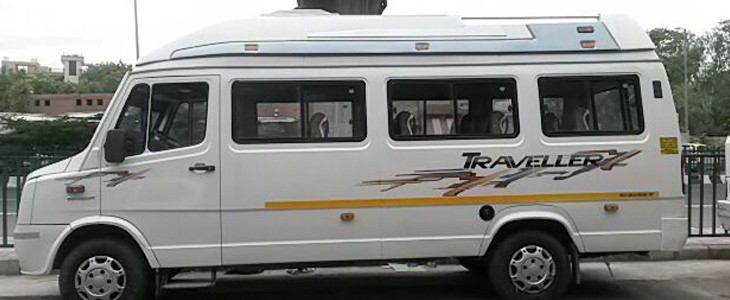

Rajahmundry Travel Blog & Tourism Guides
Explore practical articles for the services and destinations travellers commonly book from Rajahmundry.
Travel knowledge, organised by what you need
Hover the Blog menu to jump directly to article topics, or choose a full service blog below.

Car & Cab Rentals
Rajahmundry cab rentals for local trips, airport and railway station transfers, family holidays and outstation journeys.
Open service blog
Bus Ticket Booking
Bus booking support for Rajahmundry routes, AC and sleeper services, families and group travel.
Open service blog
Train Ticket Booking
Train ticket booking help for Rajahmundry passengers, including IRCTC, Tatkal and journey planning.
Open service blogFlight Ticket Booking
Domestic and international flight booking guidance for Rajahmundry travellers with route and schedule planning.
Open service blog
Papikondalu & Maredumilli Tourism
Two of the region’s most popular experiences — Godavari river cruises through Papikondalu and forest-and-waterfall escapes in Maredumilli.
Open service blog
Devotional Yatra Packages
Organised pilgrimage journeys connecting sacred destinations such as Kashi, Ayodhya, Tirupati, Arunachalam and major Andhra temples.
Open service blogPapikondalu & Maredumilli Tourism in Pictures
See colourful moments related to Papikondalu & Maredumilli Tourism, curated for Rajahmundry travellers.